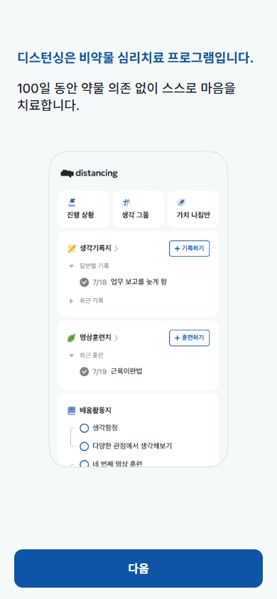
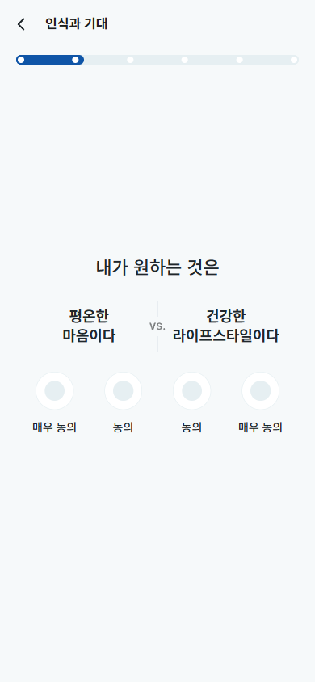
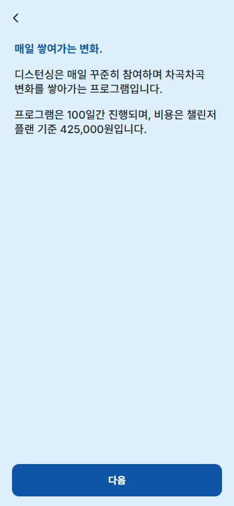

광고 클릭 후 50+ 화면·25문항의 자기설문을 거쳐야 가격(425,000원)을 만남. 정작 '디스턴싱'을 체험하는 순간은 0회.
가치 '설명'만 있고 '체험'이 없음 + 과도한 설문 + 보상 없는 매몰비용 + 가격·페이백 설계 미흡.
Calm·Headspace·Duolingo·Noom의 Value-first 온보딩으로 '아하'를 결제 앞에 배치.
온보딩 CVR↑ = 모든 채널 CAC 동시 인하. 입찰·타겟팅보다 ROI가 큰 레버.
퍼포먼스의 첫 단추는 매체가 아니라 클릭 직후의 60초 — 온보딩이 새면 아무리 잘 태운 광고도 손해입니다.
입찰·타겟팅·소재는 한 채널만 개선하지만,
온보딩 전환율은 전 채널을 한 번에 올린다.
"앱스토어 직링크 대신 가치를 납득시키는 브릿지를 거치면 고의향 유저만 진입한다"는 가설을 동일 계정·114일 통제 비교로 검증.
그래서 저는 "예산을 늘리기 전에 온보딩부터" — 퍼포먼스 마케터의 월권이 아니라 허용 CAC를 키우는 기본기로 봅니다.


Noom의 퀴즈 퍼널(113화면)을 본떴지만 — 길이만 따라 하고 '개인화 보상'은 빠졌습니다.
※ 2026.6 기준 promotion-onboarding 플로우 직접 워크스루. 가격은 '챌린저 플랜' 기준이며 플랜·프로모션에 따라 상이.
인트로 4p는 전부 정적 목업 이미지. 핵심 기술 '거리두기'를 한 번도 체험 못 함. Time-to-Value가 사실상 ∞.
▶ 확신 없이 결제 결정 강요6섹션·50+탭, 리커트 15문항 반복. 다단계 퍼널은 보통 40~70% 이탈, 스텝당 20% 미만이 양호.
▶ 인지 피로 → 중도 이탈Noom은 답할수록 예측 그래프가 갱신됨. 디스턴싱은 그만큼 묻고도 개인화 산출물(맞춤 진단·곡선)이 약함.
▶ 투자만 시키고 가치 환급 X가격이 맞춤 플랜 확정·가치 체험 전에 단독 노출. 강력한 무기인 '페이백 보장'이 가격과 같은 화면에 없음.
▶ 앵커링·리스크 역전 미활용핵심은 순서입니다 — "조사 → 결제"를 "체험 → 맞춤 진단 → 납득된 결제"로 뒤집어야 합니다.
디스턴싱엔 이미 강력한 체험거리가 있습니다 — '생각과 거리두기' 그 자체. 광고 클릭 후 첫 60초에 설문 대신 1분 실습을 넣습니다.
▲ 제안 목업 — '체험된 아하' 후에 설문·결제로
매몰비용을 '피로'가 아니라 '내 플랜이 완성돼 가는 보람'으로 바꾼다.
→ 당신께는 '생각 거리두기 + 행동활성화' 모듈을 우선 배치했어요
▲ 제안 목업 — 답변이 보이는 결과로 환급
순서가 핵심 — 체험 → 맞춤 플랜 → 예상 결과 → 그 다음 가격. 가격은 가치가 선 뒤 마지막에.
▲ 제안 목업 — 단가 앵커 + 투명 타임라인 + 보장
바꾸는 건 콘텐츠가 아니라 순서와 보상 구조 — 보유 자산(코치·효과데이터·페이백)을 재배치할 뿐입니다.
우선순위 원칙 — ① 코드 한 줄로 되는 '순서·가격 위치'부터 즉시 A/B, 효과 확인 후 산출물·개인화에 투자.
모든 단계는 단일 변수 A/B로 검증 — 제가 Web2App·페이백 RCT를 설계한 방식과 동일.
| 구간 | 핵심 측정 지표 (KPIs) | 의미 |
|---|---|---|
| 체험(아하) | 1분 체험 완료율 · 체험 후 설문 진입율 | 가치 체감 여부 |
| 온보딩 퍼널 | 섹션별 통과율 · 전체 완료율 · 평균 소요시간 | 피로·이탈 지점 |
| 전환(핵심) | 온보딩 완료→결제 CVR · 클릭→결제 전체 CVR | 매출 직결 |
| 퍼포먼스 환산 | 채널별 실질 CAC · 허용 CAC 여력 | 예산 확장 근거 |
| 제품 성과 | 결제→프로그램 완주율 · 50일 효과지표 | LTV·페이백 리스크 |
North Star는 '클릭 → 결제 전체 CVR' — 이 한 지표가 오르면 모든 채널의 CAC가 동시에 내려갑니다.
벤치마크 참고 — 진행바 추가 시 1→2단계 이탈 38.4%→24.1%, 입력폼 7→3 축소 시 퍼널 이탈 −44.7% (UXCam 2026 SaaS 온보딩 벤치마크).
"어떤 앱인지 먼저 체험시키고,
그 다음에 결제를 권한다."
디스턴싱은 이미 강력한 체험거리·효과 데이터·페이백을 가졌습니다 — 순서만 바꾸면 됩니다.
기대효과 (방향성 · A/B로 검증)
예산을 늘리기 전에, 클릭 직후의 60초부터 함께 고치고 싶습니다.